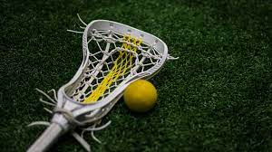
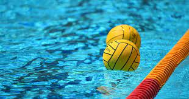

This year I played two sports, water polo and lacrosse. I have been playing both of these for all of highschool and lacrosse before. Waterpolo was in the fall and lacrosse in the spring. I was a captain on both teams but the lacrosse season had many more wins than waterpolo.
 
This year I read around 15 books for myself and for my english class. I really love reading books as a way to pass my time while not being on a screen. My favorite genres are romance and mystery novels but I also enjoy historical fiction.